riassunto
- Livello di collegamento
- Dispositivi
- NIC
- incapsulamento decapsulamento
- servizi
- framing
- controllo del flusso
- accesso al collegamento
- accessi multipli MAC
- identificare i dispositivi MAC
- IEE
- rilevazione e correzione di errori
- ritrasmissioni
- non
- tipi di collegamento
- half duplex
- full duplex
- collegamento
- end-to-end
- broadcast
- protocolli di gestione dell’accesso multiplo
- suddivisione di canale
- TDMA
- FDMA
- accesso multiplo
- SLOTTED ALOHA
- UNSLOTTED ALOHA
- CSMA
- CSMA/CD
- a turni presi
- POLLING
- TOKEN PASSING
- Switch
- tabella di commutazione
- Ethernet
- frame
- dominio di collisione
- LAN
- MAC
- NIC
- Protocollo ARP
- ARP reply
- ARP request
- VLAN
- VLAN a switch singolo
- VLAN a switch multipli
- EVPN
- ID VLAN 802.1Q
- Reti Wireless
- gestione frequenza
- 2 modalità
- con infrastruttura
- senza infrastruttura
- attenuazione del segnale
- riflessione del segnale
- tempo di coerenza
- interferenza dei segnali
- SNR
- BER
- terminali nascosti
- CDMA
- Wi-Fi standard 802.11
- BSS
- Gestione frequenze
- Accesso
- modalità passiva
- attiva
- CSMA/CA
- DIFS
- SIFS
- prenotazione
- RTS
- CTS
- Bluetooth
- Piconet PAN
- Master
- Bootstrapping
- neighbor discovery
- paging
- Reti 4G/5G
- UE
- Base Station
- HSS
- MME
- P-GW
- S-GW
- mobilità handoff
- routing diretto
- indiretto
- Reti LTE
- piano di controllo
- piano di dati
- tunneling
- home network
- visited network
LIVELLO DI COLLEGAMENTO
- introduzione
- il livello di collegamento si occupa di trasferire i datagrammi da un nodo a quello fisicamente adiacente lungo il percorso
- ha una visione più dettagliata su dispositivi come switch
- il livello di collegamento si serve di frame, con al loro interno i datagrammi incapsulati
- il livello di collegamento si occupa di trasferire i datagrammi da un nodo a quello fisicamente adiacente lungo il percorso
- servizi del livello di collegamento
- Framing
- processo di incapsulamento dei datagrammi che provengono dal livello di rete aggiungendo intestazione e trailer che servono a delimitare la singola unità
- Accesso al collegamento
- effettuare un accesso al mezzo di trasmissione condiviso tra dispositivi si usano protocolli MAC(Medium Access Control)
- per identificare i dispositivi che condividono questo stesso mezzo di trasmissione si usano gli indirizzi MAC che identificano univocamente la scheda di rete del dispositivo, è statico a differenza degli IP che lavorano sul livello di rete
- Consegna affidabile tra nodi adiacenti
- servizi che rilevano errori, usati soprattutto in reti wireless dove ci sono errori più frequenti
- Controllo del flusso
- Regola la velocità di trasmissione del singolo collegamento
- Rilevazione degli errori e correzione
- Ogni protocollo di collegamento ha controllo sui vari errori e possono essere risolti con o senza ritrasmissioni
- ARQ(Automatic Repeat reQuest) con ritrasmissioni
- FEC(Forward Error Correction) senza ritrasmissioni
- Ogni protocollo di collegamento ha controllo sui vari errori e possono essere risolti con o senza ritrasmissioni
- Framing
- tipi di trasmissione
- Half duplex
- La trasmissione non può essere simultanea da entrambe le direzioni
- Wifi
- La trasmissione non può essere simultanea da entrambe le direzioni
- Full duplex
- La trasmissione è simultanea per entrambe le direzioni
- Ethernet
- La trasmissione è simultanea per entrambe le direzioni
- Half duplex
- Livello di collegamento negli host
- come componenti del livello di collegamento gli host hanno la scheda di rete detta
- NIC(Network Interface Card) che fa da intermediario sia del livello fisico che quello di collegamento
- Come è fatto un host
- mittente
- il mittente sfrutta il controller nella scheda di rete per
- incapsulare il datagramma dentro un frame
- aggiungere vari bit di controllo
- gestire flusso trasferimento affidabile ecc…
- la CPU dell’host consente di costruire i dati e interagisce con la NIC(Network Interface Card) per assemblare il pacchetto
- il mittente sfrutta il controller nella scheda di rete per
- destinatario
- il controller della scheda di rete
- verifica eventuali errori nei bit ricevuti
- gestisce anche lui trasferimento affidabile e flusso
- estrae il datagramma dal frame
- la CPU in questo caso prende i dati e li passa ai livelli superiori rete trasporto ecc…

- il controller della scheda di rete
- mittente
- come componenti del livello di collegamento gli host hanno la scheda di rete detta
Rilevazione degli errori
-
introduzione alla rilevazione degli errori
- per rilevare errori si usano tecniche come l’utilizzo di un codice EDC(Error Detection and Correction)
- quando vengono inviati dei dati viene aggiunto questo codice
- questo codice EDC viene generato a partire da una funzione applicata sui dati
- una volta generato viene inviato al destinatario
- il destinatario adesso riceve questi dati ci riapplica la funzione e vede se corrisponde a EDC precedente
- non é super affidabile e in più c’è overhead

- per rilevare errori si usano tecniche come l’utilizzo di un codice EDC(Error Detection and Correction)
-
3 tecniche utilizzate per fare controllo sugli errori migliori di EDC
- Bit di parità
- Obbiettivo
- vengono presi i dati in bit e vengono aggiunti eventuali bit per rendere il numero di 1 totali pari
- dopo aver inviato il tutto se il numero di bit a 1 compreso quello di parità sono dispari, errore
- unico problema se ho errori su un numero di bit pari ritornerei comunque a una sequenza pari quindi non rileverei errori
- vengono spesso usate matrici di bit per verificarli
- parità bidimensionale
- creare una matrice per calcolare parità su righe e colonne
- comprende anche un bit globale
- Checksum
- Obbiettivo
- Il checksum è un meccanismo di controllo dell’integrità dei dati che viene usato principalmente a livelli superiori come quello di trasporto con UDP TCP ecc… oppure anche sul livello di rete come IP
- il mittente prende il contenuto del pacchetto come una sequenza di interi, la somma facendo il complemento a 1
- ovvero la somma con i suoi bit normali e la sua controparte in complemento a 1
- il risultato viene a sua volta complementato a 1 e lo inserisce nel campo checksum
- il mittente prende il contenuto del pacchetto come una sequenza di interi, la somma facendo il complemento a 1
- il ricevente somma tutto compreso checksum
- controlla se il risultato sono tutti 1 per vedere se non ci sono errori
- Il checksum è un meccanismo di controllo dell’integrità dei dati che viene usato principalmente a livelli superiori come quello di trasporto con UDP TCP ecc… oppure anche sul livello di rete come IP
- Obbiettivo
- CRC
- Sistema estremamente affidabile per rilevare errori
- il mittente tratta i dati come una lunga sequenza di bit e li divide per un polinomio binario predefinito
- il resto della divisione CRC viene allegato al frame
- il destinatario svolge la stessa divisione e verifica il resto
- se è 0 i dati sono probabilmente corretti altrimenti c’è stato un errore nella trasmissione
- Obbiettivo
- Bit di parità
Collegamenti e accesso multiplo
- Punto a Punto
- collegamento di tipo punto a punto
- composta da un trasmittente e un ricevente
- Broadcast
- canale di collegamento che comprende più nodi che trasmettono e piu nodi che ricevono
- presentano problemi di accesso multiplo da risolvere
Gestione accesso multiplo
- Iniziamo con la spiegazione di un protocollo ideale MAC
- Multiple Access Channel
- in modo ideale è previsto che se in un collegamento ho più nodi ho trasmissione pari a R/M
- se invece ho solo un dispositivo avrò velocità R totale
- inattuabile
Tipi di protocolli ad accesso multiplo reali
-
si dividono in
- Channel Partitioning
- con canale suddiviso
- ogni nodo ha una sua fetta del canale
- le fette rimanenti sono inutilizzate
- Random Access
- il canale presenta collisioni e per risolverle vengono fatte ritrasmissioni e operazioni di recover
- Taking Turns
- i nodi usano il canale a turno
- i nodi con maggiore priorità potrebbero avere il turno più duraturo
- tipo i nodi con più materiale da inviare
- Channel Partitioning
-
Quelli a Channel Partitioning
- TDMA
- il canale viene suddiviso per istanti temporali fissi
- detti time slot
- ogni nodo ha il suo timeslot
- in quel timeslot ha accesso completo
- gli slot inutilizzati si dicono idle 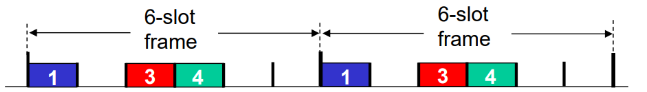
- il canale viene suddiviso per istanti temporali fissi
- TDMA
-
FDMA
- il canale viene suddiviso in spettri di frequenze diverse interna un cavo FDM
- ogni nodo trasmette sulla sua frequenza non alla massima velocità 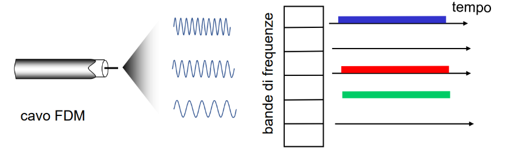
-
Quelli ad Accesso casuale
- SLOTTED ALOHA
- l’uso del collegamento è diviso in slot temporali
- ogni nodo che vuole inviare qualcosa accede attende il prossimo slot temporale libero e vi accede
- se viene occupato prima da qualche altro nodo avviene una collisione e deve attendere il time slot successivo
- ogni nodo decide in autonomia quando trasmettere
- possono esserci collisioni frequenti o inutilizzi di slot temporali
- i nodi devono essere sincronizzati
- un nodo può utilizzare il canale in modo efficace con una probabilità del 37% del tempo 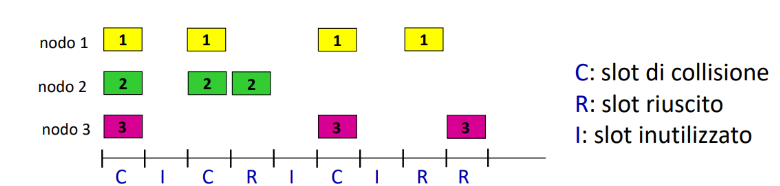
- SLOTTED ALOHA
-
UNSLOTTED ALOHA
- senza sincronizzazione tra nodi
- trasmettono finché non avviene una collisione
- i nodi non aspettano il time slot successivo
- diminuisce probabilità di efficienza arrivando al 18%
- senza sincronizzazione tra nodi
-
CSMA
- il nodo prima di trasmettere ascolta il canale e vede se è libero o occupato
- possono comunque esserci collisioni dovute a ritardi di propagazione
-
CSMA/CD
- miglioria di CSMA con una detection delle collisioni
- il nodo che trasmette rimane in ascolto di eventuali collisioni
- se avviene smette di trasmettere così non viene sprecata banda per un frame che andrebbe perso
- non funziona bene via wireless
- funzionamento
- un nodo sta trasmettendo nel collegamento, allo stesso tempo si mette in ascolto per vedere se ci sono collisioni in atto
- se un nodo prova a collegarsi il nodo che trasferiva i dati lo rileva
- si interrompe la trasmissione dei nodi coinvoli nella collisione
- viene segnalata
- e poi viene assegnato un tempo casuale di accesso ad ogni nodo coinvolto e si riprende così il tutto 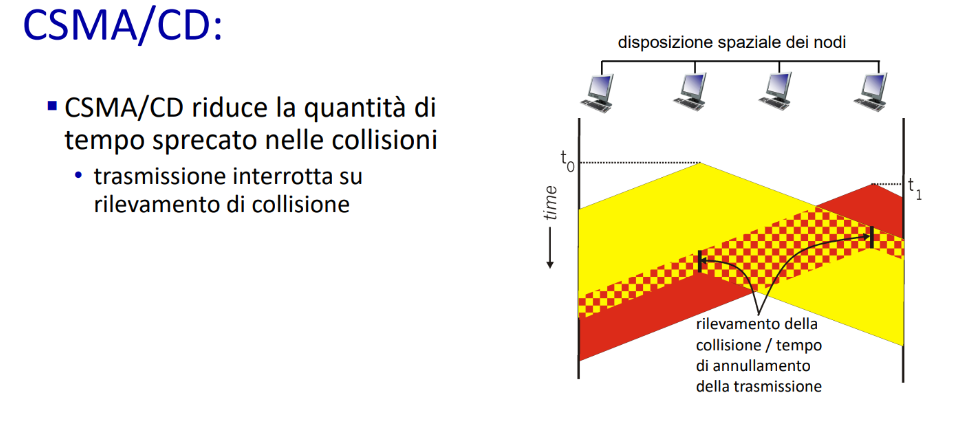
-
Quelli a Taking Turns
- POLLING
- è presente un controllore centralizzato che dice ai nodi quanti frame possono trasmettere al massimo per un dato turno
- il fatto che ci sia un controllore aumenta il ritardo ma allo stesso tempo si riducono collisioni o slot inutilizzati
- usato nel Bluetooth 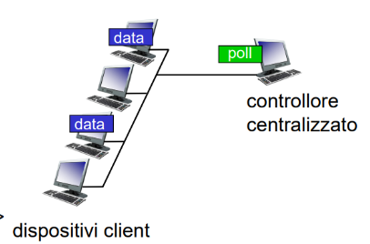
- POLLING
-
Token Passing
- Token che viene passato per ogni nodo, chi lo ha può usare il collegamento 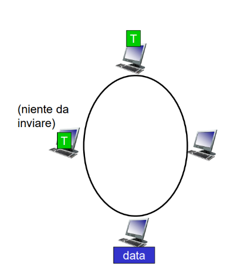
-
Gestione via cavo di
- downstream
- vengono usati canali FDM in broadcast
- upstream
- viene usato il sistema ad accesso casuale
- per mettere d’accordo i vari modem via cavo viene usato uno standard DOCSIS che precisa quali tipologie di politiche di accesso devono essere usate
- downstream
LAN
- Definizione
- Local Area Network
- indica una area ristretta come una casa o una scuola
- spesso si usano Ethernet o Wifi
Indirizzi MAC
- descrizione
- Per identificare un dispositivo di rete ad esempio una scheda di rete per effettuare uno scambio dei frame abbiamo bisogno di un indirizzo MAC, è a 48 bit ed è memorizzato nella ROM della NIC Network Interface Card
- come vengono scelti IEE
- ente internazionale che ha lo scopo di gestire e fornire indirizzi MAC ai vari produttori di NIC 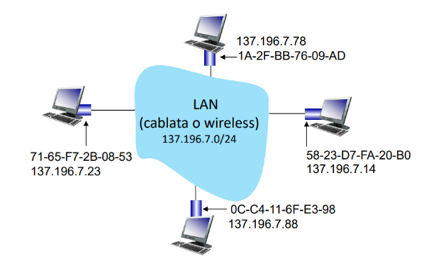
- Da IP a MAC
- Viene utilizzato un protocollo ARP che ha una tabella ARP dove sono presenti
- Ogni nodo IP nella LAN con le sue interfacce e il suo Indirizzo MAC con anche un TTL per la validità dell’informazione
- Viene utilizzato un protocollo ARP che ha una tabella ARP dove sono presenti
- Protocollo ARP
- Come funziona Se la tabella non presenta il MAC di un dato IP
- se un nodo nella rete vuole avere il MAC di un dispositivo usa il protocollo ARP che invierà un broadcast di richiesta con quel determinato indirizzo IP
- il dispositivo corretto risponde
- ora potrà essere popolata la tabella ARP
- Attacco ARP SPOOFING o POISONING
- viene inviata una risposta ARP falsa fingendosi di avere un’altro indirizzo IP
- fai confluire il traffico verso di te puoi intercettarlo oppure puoi fare un attacco Dos associando 1000 indirizzi IP allo stesso MAC
- Come funziona Se la tabella non presenta il MAC di un dato IP
- Come inviare un datagramma a un nodo non adiacente nella rete
- Se il destinatario si trova su un’altra sottorete allora bisogna instradare il frame a un router gateway
- viene creato un frame con all’interno il datagramma IP con le varie informazioni
- il router riceve il frame e lo decapsula, vede il datagramma che l’IP è da inoltrare a un altro dispositivo
- re incapsula il tutto e lo invia alla interfaccia dello switch corretta con il giusto destinatario
ETHERNET
- cosa è
- Standard di comunicazione utilizzato per le reti LAN cablate
- frame ethernet
- composto da
- preambolo
- sincronizza il ricevente e segnala quando un frame inizia
- Mac di destinazione
- MAC di sorgente
- Tipo di protocollo incapsulato nel payload per poi de capsularlo e vedere cosa c’è
- Dati
- Codici di controllo errori CRC
- preambolo
- Tutti gli standard di Ethernet usano stesso frame
- composto da
- sicurezza di ethernet
- è senza handshake
- vengono gestiti accessi multipli come ad esempio con CSMA/CD
- le altre sicurezze varie vengono gestite ai livelli superiori
- Concetto di dominio di collisione
- punto in cui si condivide stesso mezzo di trasmissione
- si può verificare una collisione tra vari frame ethernet se si trasmette insieme
- si consiglia di ridurre i dispositivi collegati a un singolo collegamento
Switch Ethernet
- Cosa sono
- Lo switch è un dispositivo che lavora sul livello di collegamento
- ha il compito di memorizzare e inoltrare i frame Ethernet
- Caratteristiche
- è plug and play non devi configurarlo
- Tabella di commutazione degli Switch
- Ogni switch ha una sua tabella di commutazione con un
- indirizzo MAC del nodo
- interfaccia che conduce al nodo
- TTL
- lo switch auto riempie le varie tabelle
- ogni volta che riceve un frame aggiunge alla tabella il mittente
- Ogni switch ha una sua tabella di commutazione con un
- Cosa fa lo switch quando riceve un frame
- Aggiorna la Switch table mettendo il mittente
- se il mittente ha stessa porta del destinatario allora non serve che ci sia questo passaggio per lo switch e scarta il pacchetto
- se è su un’altra porta lo inoltra facendo lo switching
- se non ha nella tabella il destinatario fa una operazione di flood per trovarlo
- Differenze con i router
- gli switch lavorano sul livello di collegamento i router no
- gli switch possono lavorare con pochi dispositivi perché usano una tabella normale 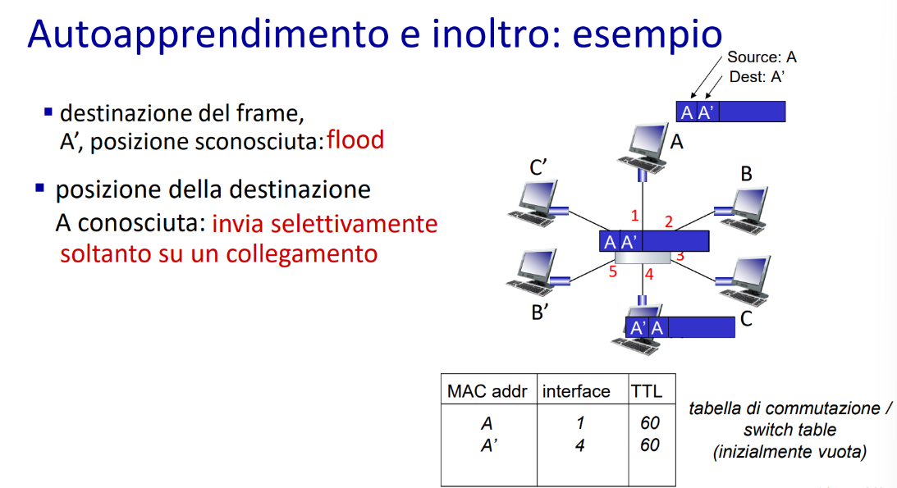
VLAN
-
cosa sono
- Se si ha bisogno di utilizzare il concetto e la comodità delle LAN su reti di grandi dimensioni senza però dover ricorrere a un solo Switch che non garantirebbe privacy e problemi di dimensioni della tabella
- esistono le VLAN
- si possono usare switch differenti per rimanere sulla stessa rete ma allo stesso tempo creare flessibilità di gestione
-
versione basata sulle porte
- un singolo switch viene usato come due switch differenti per mantenere la sicurezza
- uno switch viene diviso a metà virtualmente 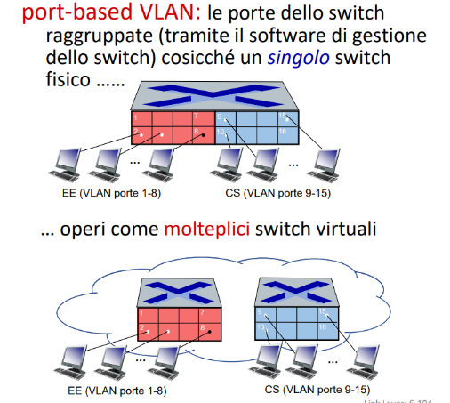
-
versione con più switch
- viene usata una porta trunk per collegare in serie più switch
- una volta collegato il tutto possono comunicare tra loro gli switch
-
EVPN
- tecnologia di tunneling che consente di creare una rete locale anche se si hanno due reti di livello 2 quindi con switch su luoghi differenti
- viene collegato il router allo switch e viene incapsulato il frame ethernet che poi verrà passato dall’altra parte con un altro router e switch
- tecnologia di tunneling che consente di creare una rete locale anche se si hanno due reti di livello 2 quindi con switch su luoghi differenti
-
le VLAN hanno un loro ID per comunicare tra loro e riconoscersi
- quest’ultimo é definito dallo standard 802.1Q
LE RETI WIRELESS
- significato di wireless
- Tecnologia di collegamento senza l’uso di fili ma attraverso frequenze
- significato di mobilità
- proprietà dell’infrastruttura di rete che consente al client di muoversi cambiando punti di accesso
- Handover
- Processo che consente a un dispositivo mobile di cambiare collegamento wireless senza problemi
- Componenti che compongono una rete wireless
- Host wireless
- dispositivi che eseguono operazioni e hanno un collegamento wireless
- si dividono in fissi o stazionari
- Collegamento wireless
- Utilizzato per collegare un host wireless alla stazione base oppure un altro host wireless
- Stazione base
- elemento che funge da ripetitore
- di solito connessa a una rete cablata
- dispositivo di relay al livello di collegamento
- Host wireless
- a una determinata velocità di banda varia il raggio di copertura
2 Tipi di infrastrutture
-
con infrastruttura
- Sono presenti stazioni base che hanno il compito di offrire servizi di rete
- avvengono operazioni di handoff, quando un dispositivo si sposta dall’area di copertura e cambia punto di accesso 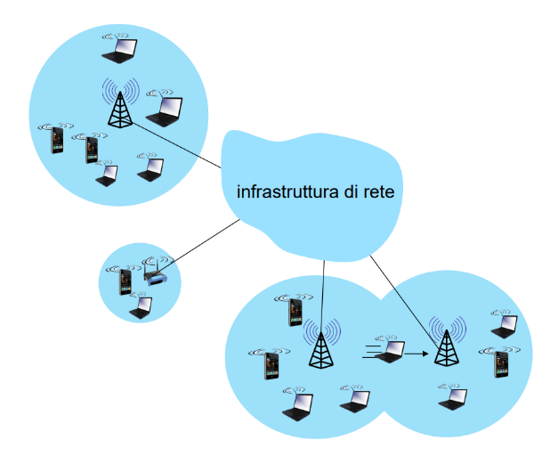
-
senza infrastruttura
- reti senza stazione base con host che comunicano tra di loro
- devono provvedere da se per fornire servizi di instradamento 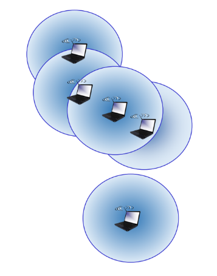
Caratteristiche dei collegamenti wireless
Concetto di attenuazione
- il segnale può essere assorbito o attenuato a seconda della presenza di determinati ostacoli o anche solo dalla distanza
- l’attenuazione con spazio libero si calcola con
- Più alta è la frequenza o più lontano è il ricevitore, più rapidamente si perde il segnale. 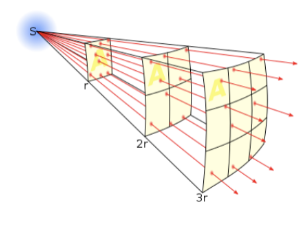
Tempo di coerenza
- Tempo che ci indica se all’arrivo di un segnale ne possono arrivare degli altri uguali a causa di possibili riflessioni a distanza di un determinato tempo
- questo tempo è detto di coerenza
interferenze da altre sorgenti
- Il fenomeno fisico di interferenza può anche verificarsi a causa di altri dispositivi che lavorano su frequenze simili
- per definire il segnale e la frequenza su cui lavoriamo usiamo il SNR(Signal-To-Noise-Ratio)
- rappresenta un rapporto tra il segnale e il rumore di fondo
- un SNR alto consente di estrarre le informazioni facilmente
- Il BER (Bit error rate) rappresenta la probabilità che un bit sia ricevuto in errore
- per definire il segnale e la frequenza su cui lavoriamo usiamo il SNR(Signal-To-Noise-Ratio)
- Bilanciamento di rete
- aumentare la potenza del segnale aumenta la SNR e riduce i BER
- ma non è proprio facile da attuare dovuto a consumi eccessivi
- i dispositivi wireless si adattano automaticamente modulando la frequenza e la velocità di trasmissione
- così da avere maggiore stabilità
- aumentare la potenza del segnale aumenta la SNR e riduce i BER
- Terminali nascosti
- I terminali nascosti sono nodi che non possono vedere altri nodi perché sono fuori dalla loro portata ma possono comunque causare collisioni che li riguardano
- ad esempio con un nodo intermedio che vede entrambi
- I terminali nascosti sono nodi che non possono vedere altri nodi perché sono fuori dalla loro portata ma possono comunque causare collisioni che li riguardano
- Accesso multiplo
- CDMA
- protocollo che permette di condividere stessa frequenza di comunicazione con più utenti
- ogni utente ha un suo codice unico chiamato chipping sequence per identificarli
- il loro segnale è codificato su questo
- CDMA
Standard Reti Wi-Fi 802.11
-
rappresenta un insieme di protocolli che consentono la comunicazione wireless tra più dispositivi
-
Architettura delle LAN 802.11
- gli host wireless comunicano con una stazione base detta anche Access Point
- le singole infrastrutture wireless sono dette BSS e hanno vari host punto di accesso ecc… 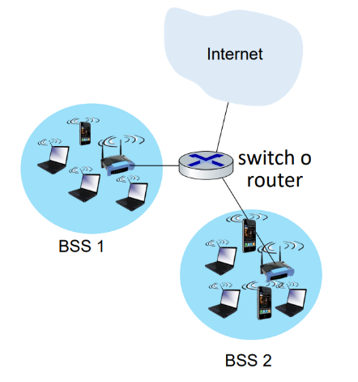
-
Divisione dei canali
- tecnica che consente la modulazione di frequenze per creare una divisione dei canali di comunicazione
- ciò comunque non riduce a zero le interferenze
- questi canali vengono scelti dal AP admin 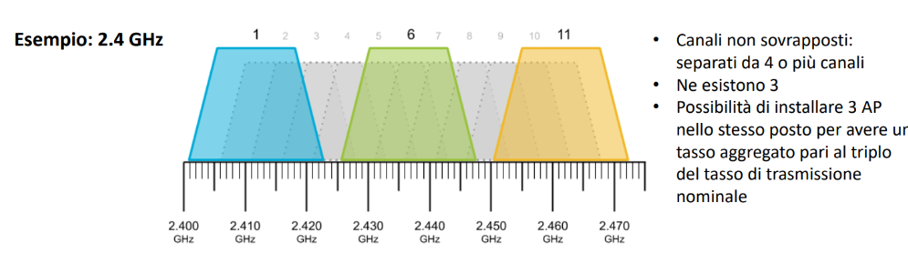
-
ingresso di un dispositivo nella rete
- un host in arrivo su una BSS deve essere associato a un AP e per farlo si hanno due modalità
- scansione attiva
- il dispositivo che si collega deve mandare un frame sonda in broadcast per trovare l’AP corretto
- passiva
- gli AP a intervalli regolari inviano questi frame beacon per essere rilevati dai dispositivi che vogliono accedervi
- al loro interno hanno un MAC e un identificativo dell’AP il SSID
- gli AP a intervalli regolari inviano questi frame beacon per essere rilevati dai dispositivi che vogliono accedervi
- scansione attiva
- dopo aver instaurato questo collegamento con accessi sicuri attraverso ad esempio WPA2
- l’host può inviare un DHCP discover che sarà passato all’AP e poi al server DHCP 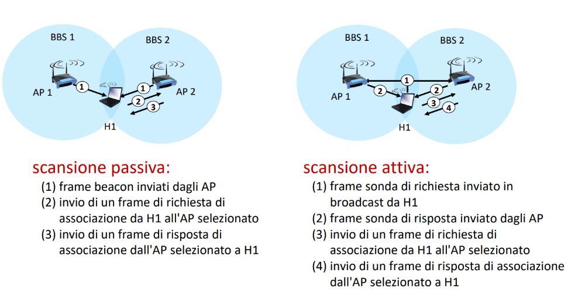
- un host in arrivo su una BSS deve essere associato a un AP e per farlo si hanno due modalità
-
collisioni nelle reti wireless
- CSMA/CA
- per gestire accesso multiplo nelle reti WiFi non si possono usare CD ovvero collision Detection perché con le reti wireless è complesso e inutilizzabile vengono usate variabili
- DIFS
- variabile che indica l’intervallo di tempo che bisogna aspettare per vedere se un canale è libero
- se lo è il mittente trasmette
- sennò aspetta un tempo backoff casuale
- SIFS
- variabile che indica un intervallo di tempo che deve aspettare il destinatario prima di inviare un ACK di ricevuta dei dati
- Meccanismo di prenotazione
- vengono usati segnali RTS(Request to Send)
- per prenotare il canale di comunicazione
- vengono inviati ai vari AP
- possono avvenire collisioni di prenotazione
- per prenotare il canale di comunicazione
- vengono usati segnali RTS(Request to Send)
- CSMA/CA
-
quando un frame viene passato a un AP ha come destinazione l’indirizzo MAC dell’AP
- quando un frame deve passare per un router viene incapsulato in un altro frame che avrà come mittente il MAC dell’AP e come destinatario il MAC del router
Tecnologie wireless
-
Bluetooth
- definizione
- Tecnologia wireless che consente un collegamento di tipo PAN(Personal Area Network)
- piconet
- nome che prende una singola rete Bluetooth che consente fino a 8 dispositivi compreso 1 master controller
- bootstrapping
- processo di accesso a una piconet di un dispositivo client
- si divide in 2 modalità possibili
- Neighbor discovery
- il master invia dei messaggi in broadcast detti inquiry
- il dispositivo in ascolto lo rileva e instaura così una connessione
- Paging
- il master invita un dispositivo specifico a entrare quando lo conosce
- viene successivamente comunicato l’indirizzo di partecipazione e altre informazioni utili

- viene successivamente comunicato l’indirizzo di partecipazione e altre informazioni utili
- il master invita un dispositivo specifico a entrare quando lo conosce
- Neighbor discovery
- definizione
-
Reti 4G/5G
- definizione
- Tecnologia funzionale che consente il collegamento wireless su WAN
- attraverso Access Point
- similarità e differenze con internet cablato
- Usano stessi protocolli e sono reti globali
- tecnologie radio da parte delle reti 4G
- supporto alla mobilità nativa da parte delle reti 4G/5G
- architettura 4G
- composta da
- Mobile device(UE)User Equipment
- dispositivi mobili connessi alle base station
- ha un IMSI ovvero un suo identificativo
- Base station(eNode-B)
- dispositivo che condivide le informazioni ai mobile Device
- coordinandoli tra loro e gestendo le varie celle di collegamento
- gestione di handover per mobilità dei device
- dispositivo che condivide le informazioni ai mobile Device
- MME(Mobility Management Entity)
- Servizio che
- conosce la posizione dei vari dispositivi
- fa da intermediario con i dispositivi e i P-GW
- identifica i dispositivi usando l’HSS
- HSS(Home Subscriber Server)
- memorizza le informazioni degli utenti con le varie chiavi di autenticazione
- Serve per identificare i dispositivi con ad esempio il loro piano dati
- S-GW
- router gateway interno alla rete che instrada i dati da parte delle UE verso i P-GW
- P-GW
- router gateway che porta a internet i dati che vengono dalle S-GW attraverso il tunneling
- router connesso alla vera e propria rete globale
- Mobile device(UE)User Equipment
- composta da
- migliorie del 5G
- maggiore velocità
- potrebbero esserci problemi di distanza di banda

- definizione
-
Rete LTE
- definizione
- Standard di comunicazione wireless con delle modifiche alle reti 4G soprattutto nella fase di tunneling dei dati è diviso in 2
- piano di controllo
- gestisce la mobilità e la sicurezza
- non trasporta i dati effettivi
- gestisce la mobilità e la sicurezza
- piano di dati
- trasportare il vero e proprio traffico dati
- pila protocollare LTE
- ogni comunicazione LTE ha una sua pila protocollare che si differisce in 2 punti
-
- quando avviene lo scambio dal UE al first hop nella base station abbiamo un incapsulamento complesso che vuole garantire sicurezza e affidabilità nella gestione dei segnali radio
-
- una volta raggiunto invece il passaggio di tunneling dove i dati passano tra i vari Gateway attraverso un tunnel
- la comunicazione avviene attraverso u n protocollo GTP-U
- che impacchetta i dati in un pacchetto UDP per poi spedire i dati al P-GW passando per l’S-GW

-
- ogni comunicazione LTE ha una sua pila protocollare che si differisce in 2 punti
- definizione
-
problema della mobilità
- definizione
- quando un dispositivo si muove bisogna rinstaurare una connessione a una base station con la copertura adatta e che magari è collegata a un router differente
- Home agent
- definizione
- Nodo nella rete che rappresenta il riferimento per la ricezione dei dati del dispositivo UE
- definizione
- approcci di routing
- 1.il router della base station differente annuncia agli altri che il dispositivo ha effettuato questo cambiamento e viene aggiornata la tabella di routing
- con troppi dispositivi non funziona
- 2.viene sfruttato il concetto di Home agent,
- si divide in 2 altri sottopunti
- 1.ROUTING INDIRETTO
- l’home Agent invia i dati che riceve per quel determinato UE al nuovo router della nuova base station
- è lento e vengono fatti giri troppo lunghi
- l’home Agent invia i dati che riceve per quel determinato UE al nuovo router della nuova base station
- 2.ROUTING DIRETTO
- i mittenti che vogliono mandare i messaggi all’UE non inviano più le informazioni all’Home agent ma al nuovo router della base station
- veloce ed efficiente ma i mittenti devono capire il tutto
- i mittenti che vogliono mandare i messaggi all’UE non inviano più le informazioni all’Home agent ma al nuovo router della base station
- 1.ROUTING INDIRETTO
- 1.il router della base station differente annuncia agli altri che il dispositivo ha effettuato questo cambiamento e viene aggiornata la tabella di routing
- definizione

- Le reti si dividono in
- home network
- rete gestita dall’operatore con cui si ha un contratto
- visited network
- rete gestita da altri operatori
- viene concessa attraverso il roaming

- home network